S36 — How Does AI Actually Think?
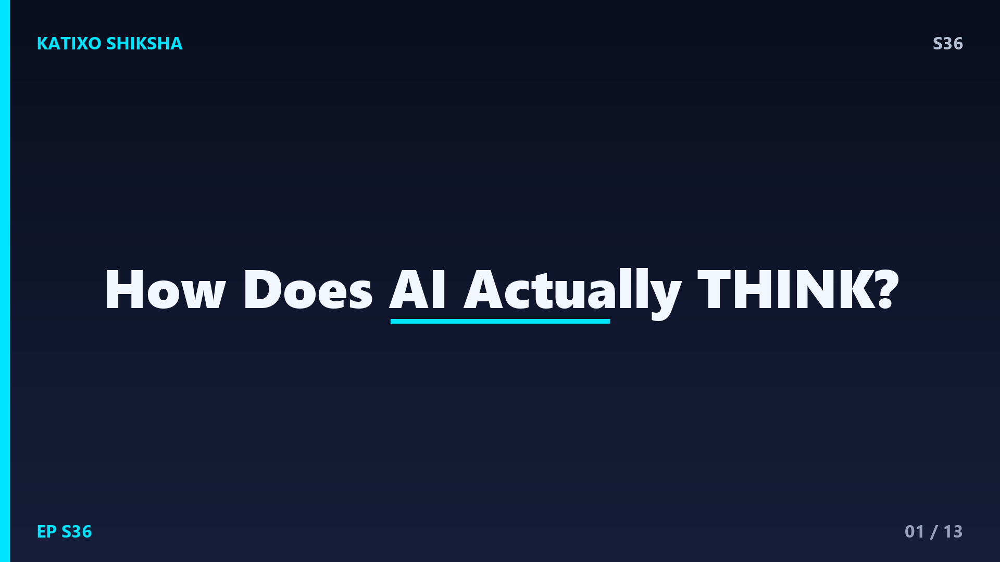
Slide 1दोस्तों, सोचो ज़रा... एक मशीन तुम्हारी फोटो देखकर बता देती है कि उसमें कुत्ता है या बिल्ली। तुम सवाल पूछते हो और वो इंसानों जैसा जवाब दे देती है। पर क्या ये मशीन सच में सोचती है? या ये सब सिर्फ एक बहुत बड़ा जादुई गणित है? आज Katixo Shiksha पर हम खोलेंगे AI का असली राज़। तुम जानोगे कि ChatGPT जैसे tools अंदर से कैसे काम करते हैं, और क्यों ये असल में दिमाग नहीं, बल्कि एक superfast pattern matching machine हैं। चलो शुरू करते हैं इस मज़ेदार सफर पर!
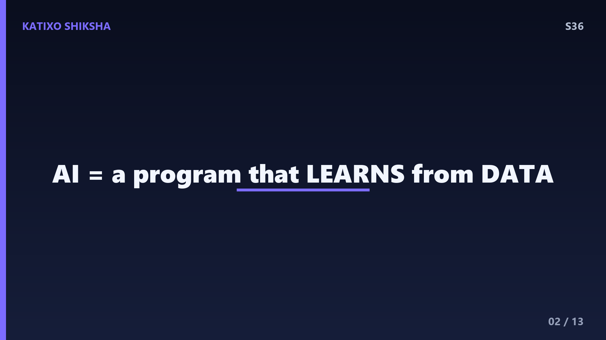
Slide 2सबसे पहले एक बात साफ कर दूँ। AI यानी Artificial Intelligence का मतलब ये नहीं कि कंप्यूटर के अंदर कोई छोटा इंसान बैठा है। AI असल में एक program है जो data से सीखता है। पुराने ज़माने में programmers हर एक rule हाथ से लिखते थे, जैसे अगर ये हुआ तो वो करो। पर दोस्तों, दुनिया में इतने rules हैं कि सब लिखना नामुमकिन है। तो scientists ने सोचा, क्यों ना मशीन को examples दिखाकर खुद से सीखने दें? इसी idea को कहते हैं Machine Learning, और यही modern AI की नींव है।
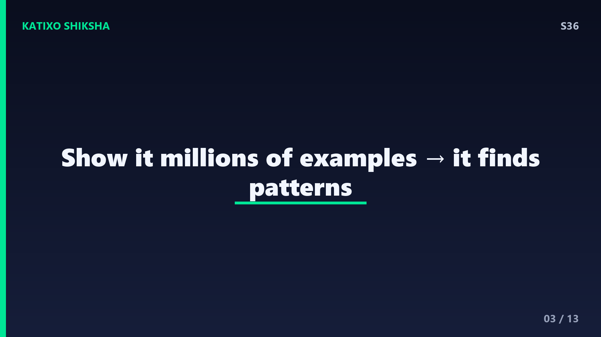
Slide 3अब समझो ये सीखना होता कैसे है। मान लो तुम्हें मशीन को सिखाना है कि बिल्ली कैसी दिखती है। तुम उसे हज़ारों, लाखों बिल्लियों की तस्वीरें दिखाते हो। हर तस्वीर के साथ बताते हो, ये बिल्ली है। मशीन धीरे-धीरे patterns पकड़ती है, जैसे नुकीले कान, मूँछें, गोल आँखें। ये पूरी process कहलाती है training. एक बड़े AI model को train करने में कभी-कभी अरबों examples और हफ़्तों का समय लगता है। और दोस्तों, जितना ज़्यादा अच्छा data, उतना ही smart AI बनता है। Data ही असली ईंधन है।
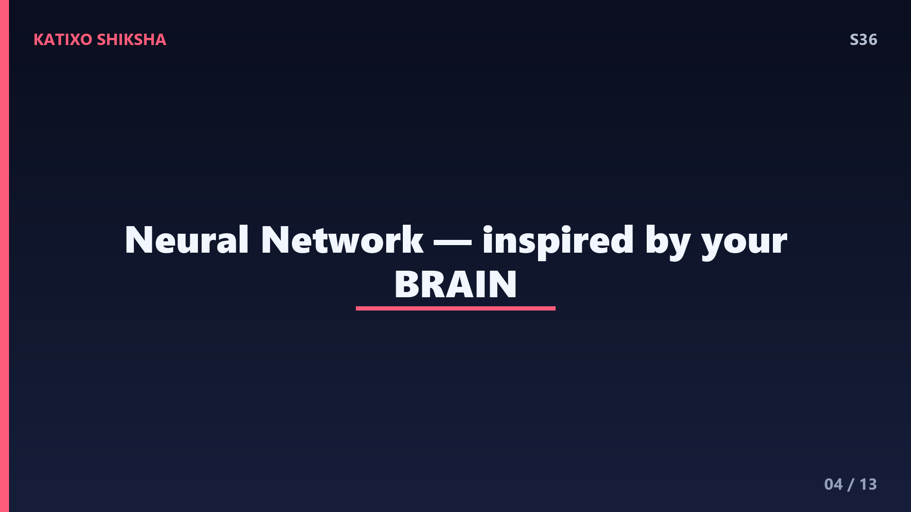
Slide 4AI के दिमाग को कहते हैं Neural Network, यानी तंत्रिका जाल। ये हमारे brain से inspire होकर बनाया गया है। हमारे दिमाग में अरबों neurons होते हैं जो एक दूसरे से जुड़े रहते हैं। ठीक वैसे ही Neural Network में होते हैं छोटे-छोटे digital neurons, layers में सजे हुए। हर neuron एक छोटा सा हिसाब लगाता है और signal आगे भेजता है। पहली layer simple चीज़ें पकड़ती है जैसे lines और किनारे, और गहरी layers मिलकर बड़ी चीज़ें पहचानती हैं जैसे पूरा चेहरा। यही layered सोच AI को इतना powerful बनाती है।
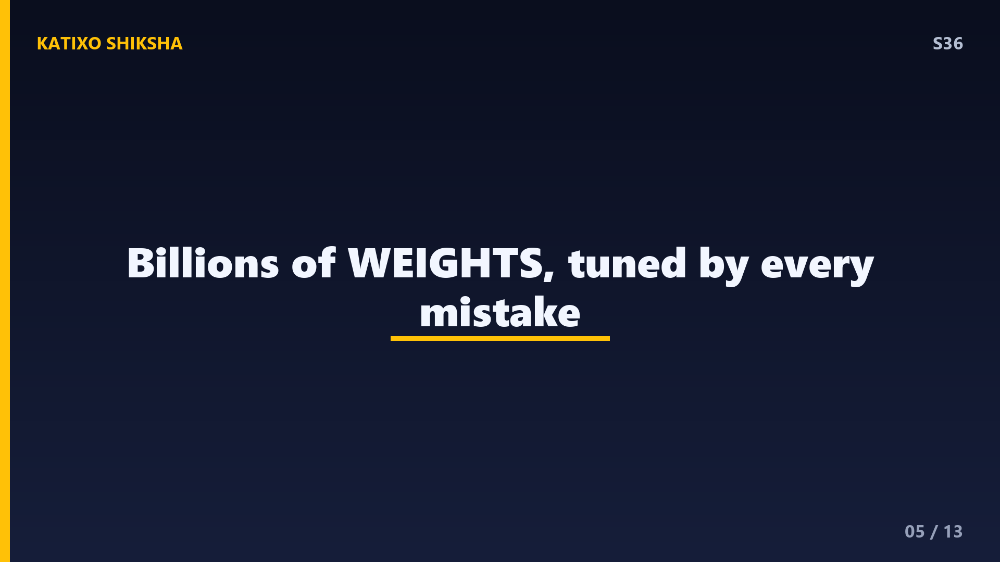
Slide 5अब आता है सबसे interesting हिस्सा, weights यानी वज़न। हर connection के साथ एक number जुड़ा होता है जो बताता है कि वो signal कितना important है। शुरू में ये सारे numbers random होते हैं, इसलिए नया AI बेवकूफ़ होता है और ग़लतियाँ करता है। पर हर ग़लती के बाद एक process चलती है जिसे कहते हैं backpropagation. इसमें AI अपनी ग़लती नापता है और हर weight को थोड़ा-थोड़ा सही दिशा में adjust करता है। एक बड़े model में अरबों, खरबों weights होते हैं। इन्हें ट्यून करना ही असली learning है, दोस्तों।
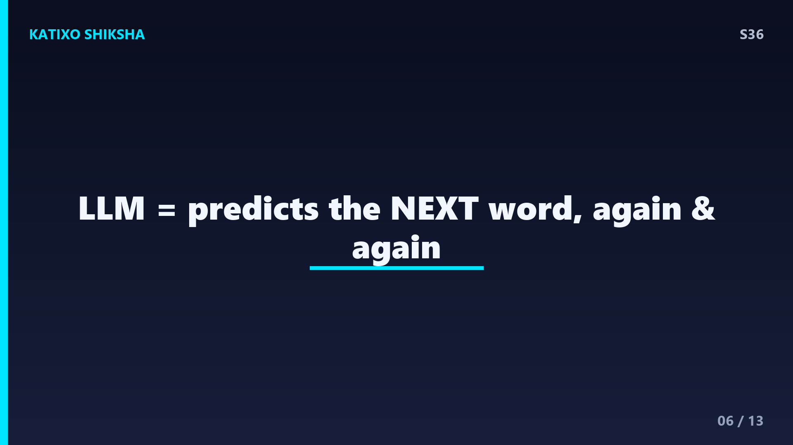
Slide 6तो जब तुम ChatGPT जैसे tool से बात करते हो, तब अंदर क्या होता है? ये एक खास तरह का AI है जिसे कहते हैं Large Language Model या LLM. इसने internet के अरबों शब्द पढ़कर एक काम सीखा है, अगला शब्द predict करना। हाँ दोस्तों, बस इतना ही! जब तुम कोई सवाल लिखते हो, तो ये एक-एक करके सबसे likely अगला शब्द चुनता जाता है, जब तक पूरा जवाब ना बन जाए। ये किसी dictionary से जवाब copy नहीं करता, बल्कि patterns के आधार पर हर बार नया जवाब बनाता है।
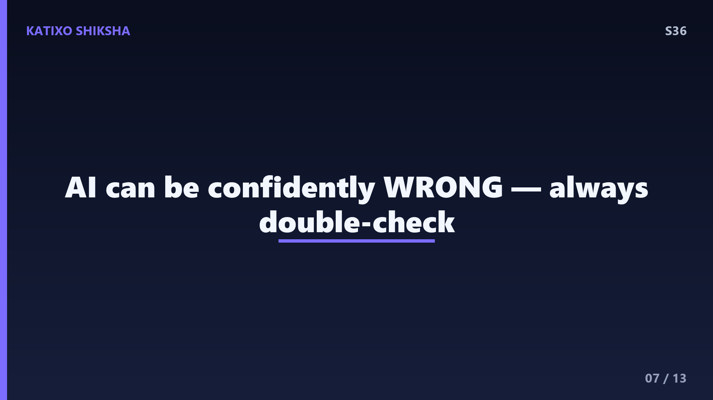
Slide 7अब एक बहुत ज़रूरी सच। AI सच में समझता नहीं है, ना ही उसे feelings होती हैं। वो बस probability का खेल खेलता है। इसी वजह से AI कभी-कभी पूरे confidence के साथ ग़लत जानकारी दे देता है। इसे कहते हैं hallucination. वो ऐसा झूठ नहीं बोलता जैसे इंसान, बल्कि उसे सच और झूठ का फ़र्क ही नहीं पता। उसके लिए सब कुछ बस patterns हैं। इसलिए दोस्तों, AI को एक super smart tool समझो, एक helper, पर हर जवाब को आँख बंद करके सच मत मानना। हमेशा खुद भी check करो।
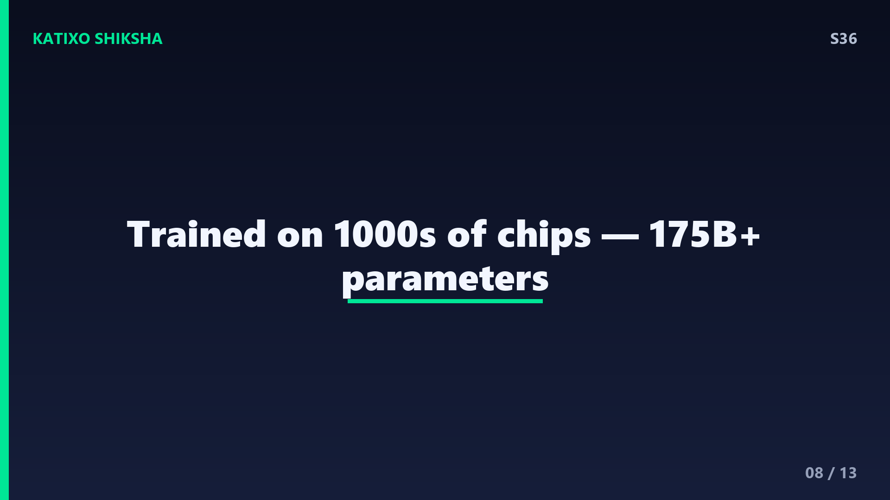
Slide 8AI कितना ताकतवर है ये numbers से समझो। GPT जैसे models को train करने में हज़ारों special chips लगते हैं जिन्हें कहते हैं GPUs. एक बार train करने में करोड़ों रुपए की बिजली खर्च हो सकती है। एक बड़े model में लगभग 175 billion या उससे भी ज़्यादा parameters होते हैं, सोचो कितना बड़ा गणित! यही वजह है कि AI चलाने के लिए बड़े-बड़े data centers चाहिए। पर एक बार train हो जाने के बाद, यही model तुम्हारे फोन में सेकंडों में जवाब दे देता है। ये है scale की असली ताकत, दोस्तों।
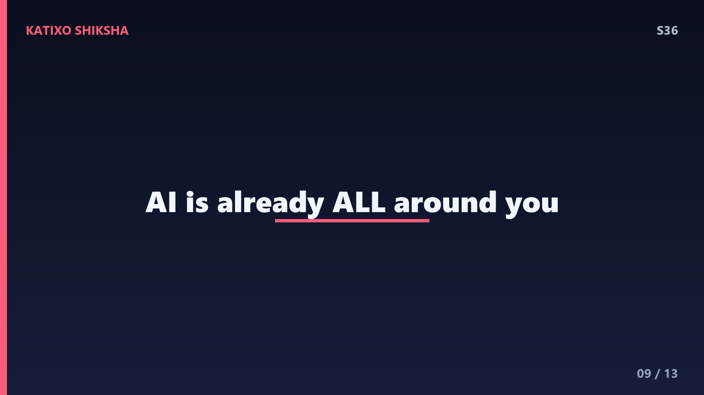
Slide 9AI सिर्फ chatbots तक सीमित नहीं है, दोस्तों। यही technology तुम्हारी zindagi में हर जगह छुपी है। YouTube तुम्हें अगला video AI से suggest करता है। Google Maps AI से traffic predict करता है। डॉक्टर X-ray में बीमारी पकड़ने के लिए AI इस्तेमाल करते हैं। Self-driving cars camera और AI से सड़क देखती हैं। यहाँ तक कि तुम्हारे फोन का face unlock भी एक Neural Network है। AI एक tool है, और जैसे आग से खाना भी बनता है और जलन भी होती है, वैसे ही इसका सही या ग़लत इस्तेमाल हम इंसानों के हाथ में है।
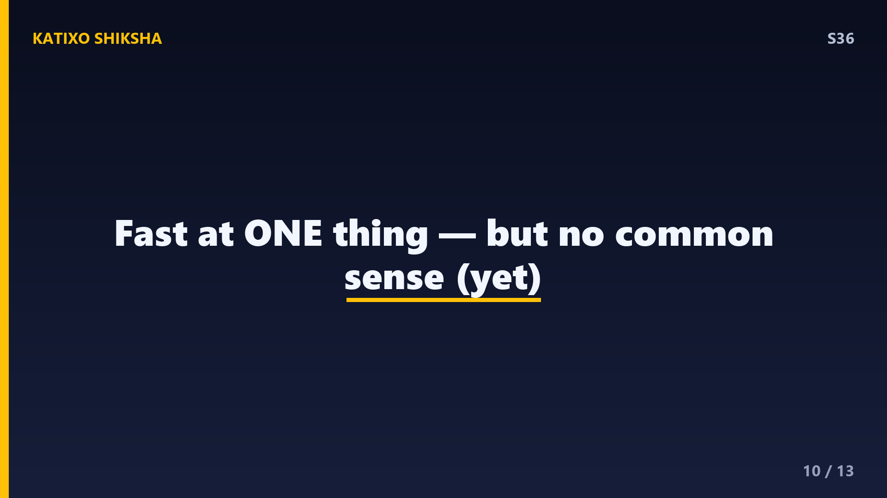
Slide 10एक मज़ेदार सवाल जो सब पूछते हैं, क्या AI इंसानों से ज़्यादा होशियार हो जाएगा? सच ये है कि आज का AI एक काम में बहुत तेज़ है, पर उसमें common sense नहीं होता जो एक छोटे बच्चे में भी होता है। AI को नहीं पता कि पानी गीला होता है जब तक किसी ने उसे ये ना सिखाया हो। उसमें curiosity, emotions और असली समझ नहीं है। तो डरने की कोई बात नहीं, दोस्तों। AI हमारी मदद करने वाला साथी है, और इसे और बेहतर बनाने का काम शायद तुम जैसे future scientists ही करेंगे।
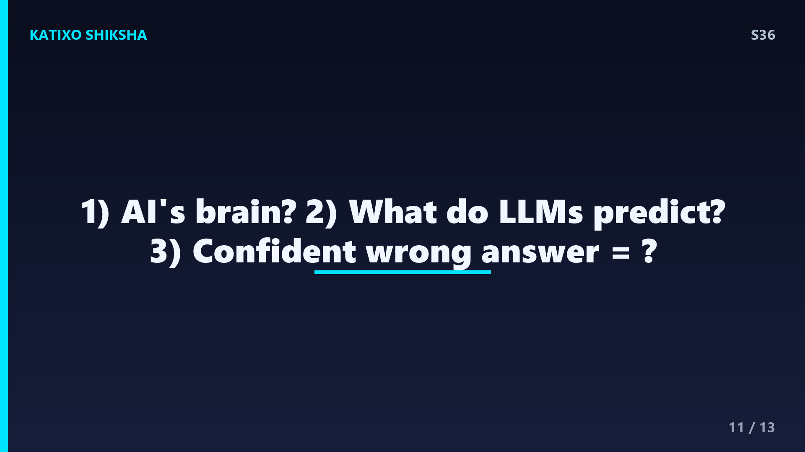
Slide 11Quick brain check! दोस्तों, अब देखते हैं तुमने कितना समझा। तीन सवाल हैं, ध्यान से सोचो। पहला, AI का असली दिमाग किसे कहते हैं जो हमारे brain से inspire है? दूसरा, ChatGPT जैसे LLM असल में क्या काम करते हैं, यानी वो हर बार क्या predict करते हैं? और तीसरा, जब AI पूरे confidence के साथ ग़लत जानकारी देता है तो उसे क्या कहते हैं? Video को यहीं pause करो, थोड़ा दिमाग लगाओ, और अपने जवाब मन में या copy में लिखो। तैयार हो? चलो अगली slide पर answers देखते हैं!
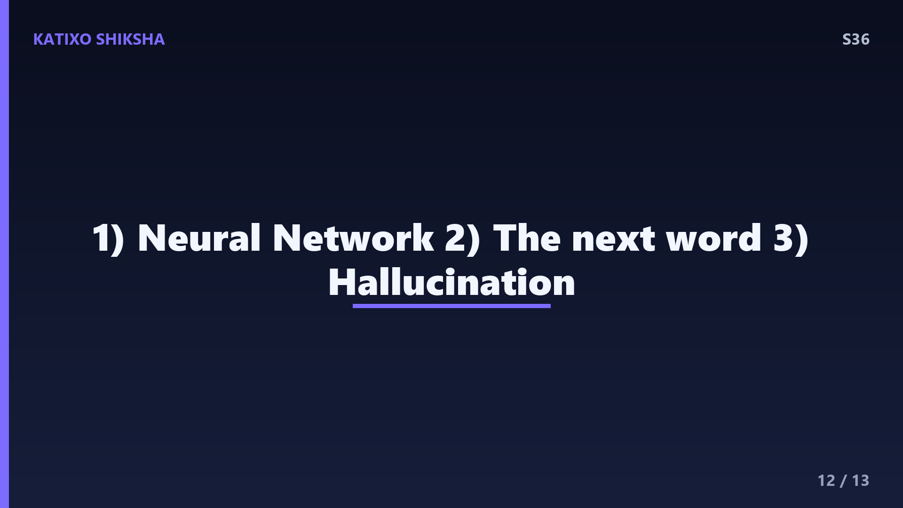
Slide 12तो दोस्तों, चलो जवाब मिलाते हैं! पहला जवाब, AI के दिमाग को कहते हैं Neural Network, जो छोटे digital neurons की layers से बना होता है। दूसरा जवाब, ChatGPT जैसे Large Language Models हर बार सबसे likely अगला शब्द predict करते हैं, और इसी तरह पूरा जवाब बनाते हैं। और तीसरा जवाब, जब AI confidently ग़लत जानकारी बनाता है तो उसे कहते हैं hallucination. अगर तुमने तीनों सही किए, शाबाश, तुम तो AI expert बनते जा रहे हो! और अगर कोई छूट गया, कोई बात नहीं, फिर से देख लेना।
Slide 13तो आज हमने सीखा, AI सच में सोचता नहीं, बल्कि data से patterns सीखता है। उसका दिमाग है Neural Network, जो weights को adjust करके training में सीखता है। ChatGPT जैसे tools अगला शब्द predict करते हैं, और कभी-कभी hallucinate भी करते हैं, इसलिए हमेशा खुद भी जाँच करो। AI एक ज़बरदस्त tool है, पर उसकी ताकत हमारे हाथ में है। अगले episode में हम जानेंगे एक ऐसा रहस्य जो आसमान में रंग बिखेर देता है, northern lights यानी auroras! Subscribe करना मत भूलना! मिलते हैं अगले video में, तब तक के लिए, Bye!